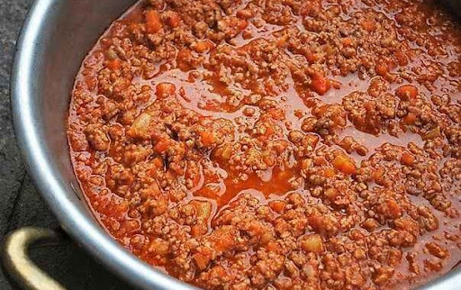

Bolonnaise Sauce Recipe

The recipe for bolonnaise sauce that my grandmother gave me.
Ingredients
- minced meat 500g
- 1/2 Onion
- 2 carrots
- Celery
- 2 slices of garlic
- A glass of still white wine
- Two glasses of Tomato sauce
- Salt and pepper
- A glass of oil
- One vegetable stock cube
- water
Preparation
- Cut the carrots, the onion and the celery into tiny pieces and put them in a big pot with the garlic, the oil and half a glass of wine. Cook for 5 minutes
- Add the stock cube, the rest of the wine, the tomato sauce, the minced meat to the pot. Cook with medium heat and with the cover on.
- make sure the meat is not dry: there should always be a thin layer of liquid covering it all (oil+tomato sauce+wine). If it's not the case, add water until that level is reached.
- Add salt and pepper
- Stir every half an hour or so. The sauce takes three hours to cook.
- Let it cool down and put it in the freezer/fridge. The sauce it's better the next day.